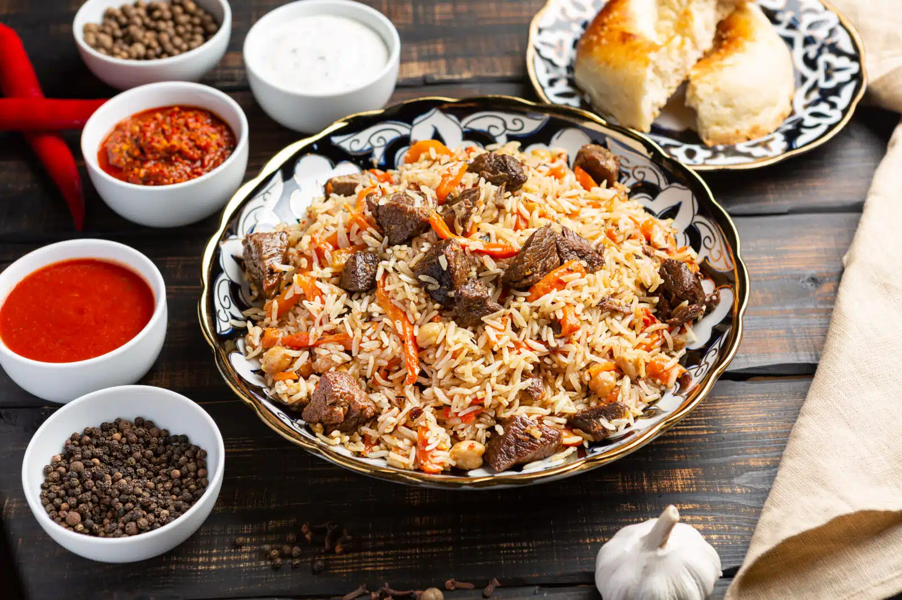

Plov

Description
Plov is a popular Central Asian dish made of rice, meat (usually lamb), carrots, and spices.
Ingredients
- 1 kg lamb or beef
- 2 cups rice
- 2 onions
- 2 carrots
- Salt, pepper, cumin to taste
- Water for boiling
Steps
- Cook the meat until tender.
- Add onions and carrots, cooking them until soft.
- Stir in rice and spices, and cook until rice is tender.